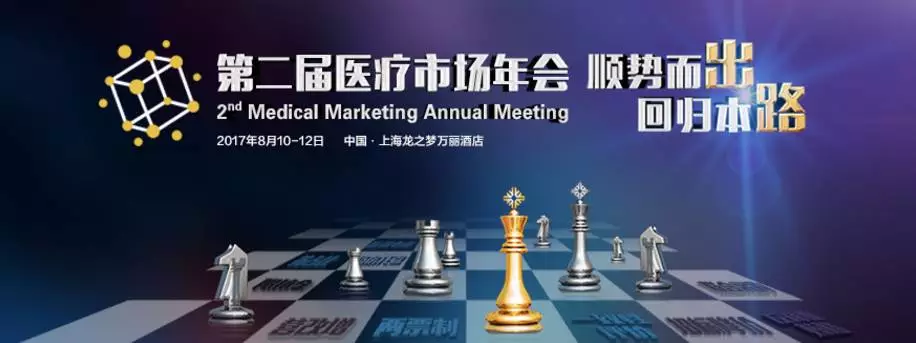
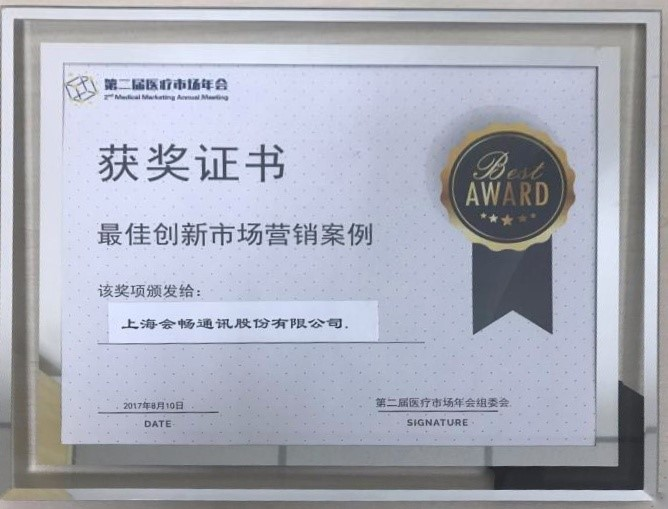
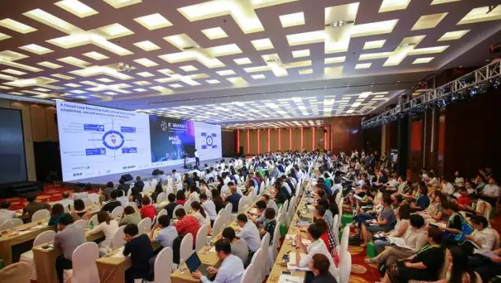
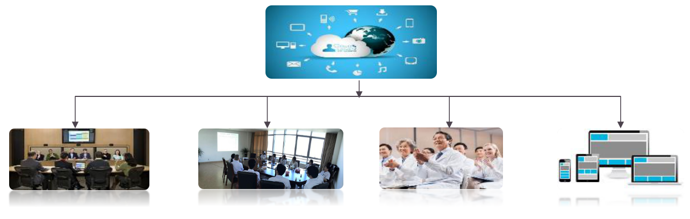
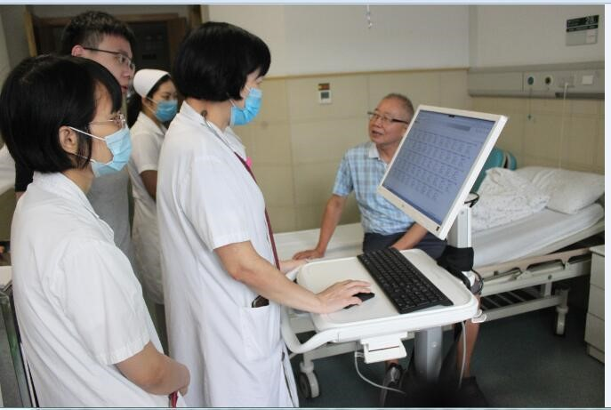
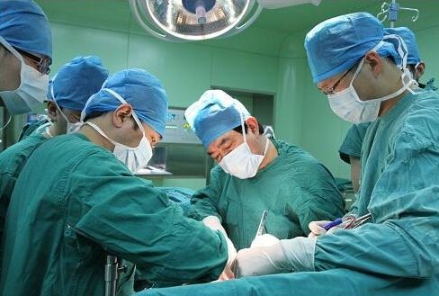

会畅通讯思齐医疗年会获殊荣，云视频助力移动医疗创新
-
 媒体报道
媒体报道
- 2017-08-18
媒体报道

作为“十三五”深化医改的关键一年，2017年对于医疗行业注定是不平凡的一年。大批医改新政已出台，自上而下的改革势在必行，而对医疗市场的影响也可谓是立竿见影。
为应对不断变化的市场，8月10日下午，由思齐俱乐部主办的第二届医疗市场年会，邀请到数十家医疗行业大咖齐聚龙之梦万丽酒店，共商医疗行业发展出路。
作为年会核心嘉宾之一，会畅通讯应邀到会参加路演，并发表主题为《云视频在移动医疗中的创新应用》的演讲，抛砖引玉，呈现满满“干货”及直抵医疗行业发展痛点的建设性意见，从而荣获了大会“最佳创新市场营销案例”奖。
冠誉为云视频会议领导者，会畅通讯凭借11年来的“科技匠心”，已在医疗行业云视频应用方面取得可观成绩，为医疗行业大踏步迈入数字时代提供了有力的服务支持。
会畅通讯以“整合资源，拓展医疗新模式”为切入点，全面打通了云视频平台、医院硬件设备、软件+辅助设备、外部资源以及桌面移动端应用的互通互联，旨在为医疗行业机构建立起涵盖医患高效互动、远程专家会诊、健康+医学教育、3D医疗可视化系统等为一体的数字化信息沟通平台。同时，会畅通讯还致力于将移动查房、手术直播等代表行业前沿技术不断地升级优化，打磨锻造形成能够广泛应用于医药市场的成熟技术。
移动查房方案
为满足基层医院通过数字化营销平台，增近院级交流的同时，加速基层医生查房学习进度，减少线下教育成本以及传递产品信息及品牌策略等需求，会畅通讯通过云视频平台全程记录查房细节，移动采集音视频信号将过程实时直播给基层医院。此解决方案不仅能够让医生之间快速、准确地传递了查房知识，同时在短短3个月时间就在基层医院目标客群中达到了惊人的覆盖率。
手术直播
除了在基层医院查房中扮演重要角色，会畅通讯还具备将视频系统和远程病理平台结合和讨论远程影像系统结合的强大整合能力，而这种信息交换能力与医疗行业新兴的“直播+医疗”模式堪称是珠联璧合，如手术过程的直播，可以让网友亲眼见证医疗奇迹，同时也能让远在世界各个角落的医生进行同步观摩、学习和探讨。
海外行业大会
传统的海外行业会议，与会者需提前安排行程、远途参会。对于医疗行业人士及专家来说，参会的时间成本和经济成本相当高昂。会畅通讯介入医疗行业后，通过全球部署的云视频直播平台，轻松将海外大会实时直播回国内。如此一来，不仅节省与会的时间和经济成本，还能吸引一批原本没有时间和条件参会的医务人员与专家参与，共享行业新成果。
坊间有言：“隔行如隔山”，会畅通讯却完成了云视频平台与医疗行业的整合，这与其多年来坚持覆盖医药行业战略方针及细分行业的服务经验密切相连。
截止目前，会畅通讯已同国内外多家知名医疗行业品牌保持战略合作，逐步完成向医疗领域更深层次布局，持续为移动医疗创新的提供强大推动力，更为完成新医改数字化医疗目标提供必备技术支持。